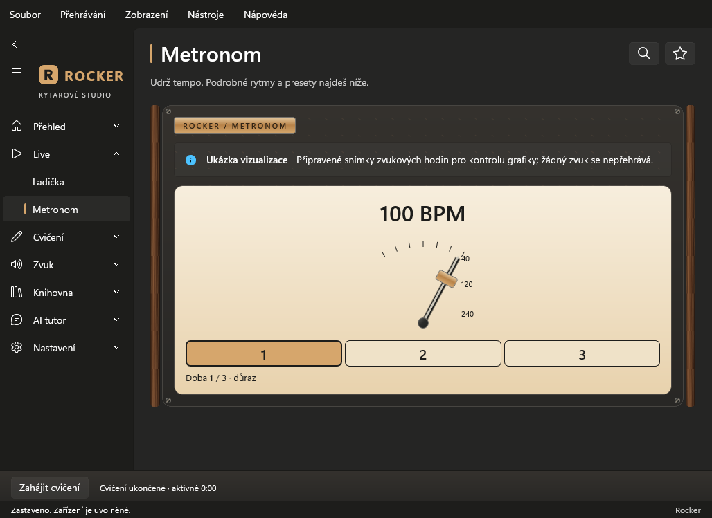

Metronom · hlavní přístrojKyvadlo, čísla dob a volba zobrazení přímo u tempa. Podrobné nastavení je rozbalovací.
Ukázka pohybu a dobVýslovně označené kontrolní snímky hodin. Snímek není důkazem skutečného poslechu.